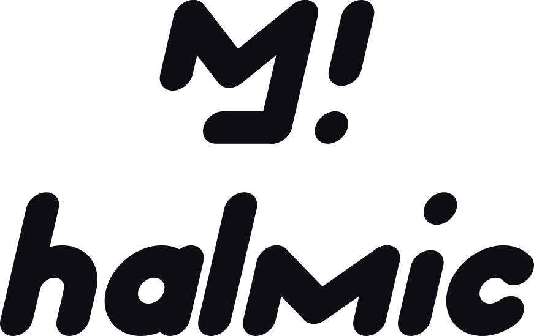
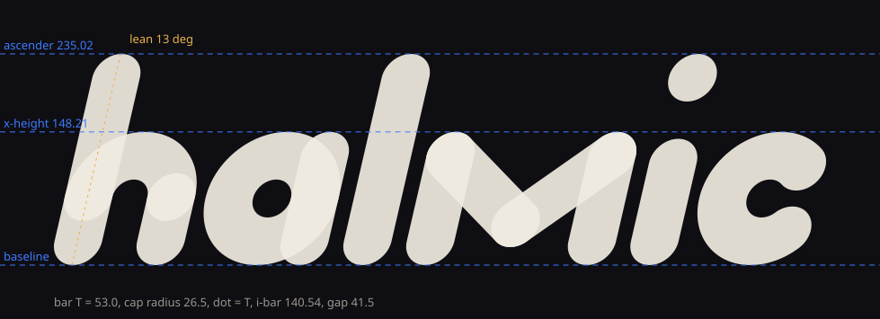

halmic logotype specimen
Generated by build-logotype.mjs from the mark's own geometry: bar thickness 53, full-round caps (radius 26.5), a 13 degree lean, a dot the size of the bar, the long bar (235.02) as ascender, the short bar (148.21) as x-height. Three directions, then the recommended family.
Three directions, light and dark
A, Bar: semicircle arches, the safest read. B, Round: flat stadium shoulders, wider, looser. C, Slash: tight, round h, and an m that is the monogram's M in small (stem, V, stem). Each shown at display size and at 24px and 16px height.


Recommended family (C)
Horizontal lockup at 1:1 with the mark (the bars are literally the same thickness), stacked lockup, and the mark tile for avatars and favicons. Ink on paper, paper on ink, and the accent version (signal coral on ink).



Mark tile (avatar, favicon, Twitch profile picture)
The existing mark is untouched: its eight paths are reused as is, centred at 58% of the tile. Shown at 256, 96, 48, 32 and 16px.

Construction

Clear space and minimum size
Clear space on every side is one bar thickness (T = 53 units, which is 22.5% of the lockup height, one dot). Nothing enters it.
- Wordmark alone: never smaller than 20px tall on screen (ascender to baseline), 8mm in print. The 16px row above is the failure case, shown for honesty.
- Horizontal lockup: 28px tall minimum. Stacked lockup: 64px tall minimum.
- Below those, use the mark tile (down to 16px) or the wordmark alone.
- Do not recolour parts, outline, add shadows, change the lean, stretch, or set the wordmark in a different weight. Three colourways only: ink, paper, accent.
- The accent version is for dark grounds only (coral on ink); coral on paper fails contrast for small sizes.